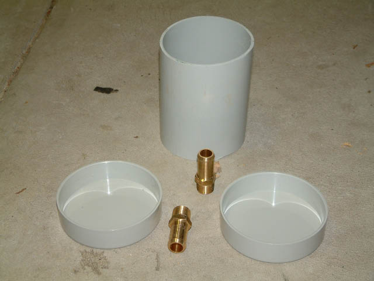
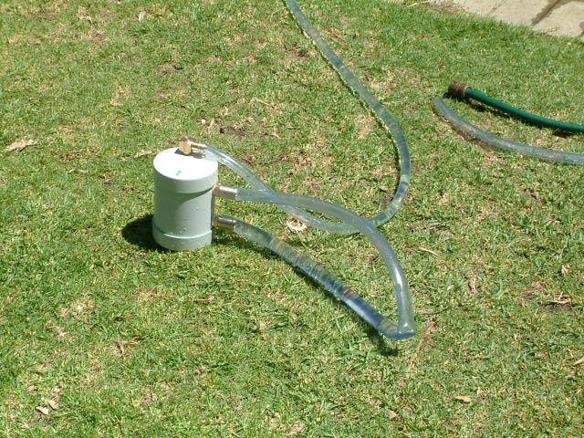

|
Well the LAN I was rushing to attend in the original project went well - PC performed great, and I got asked many questions about the monstrosity I'd created. Was more than happy to show the guts to those interested, although many weren't convinced of the internal asthetics :) I'd agree, as this is about performance, not rice.
But like all projects, there's always something one can do to improve it. In this instance, the reservoir was giving me gyp. It's main issues were twofold: So to solve these 2 issues, Voool and I decided to replace it with a much larger reservoir. Pre-made ones were just not up to the task, so we set about making our own :) |
|
Here we have the raw components. We bombed down to Bunnings and picked up a section of storm water pipe and 2 endcaps. We then went down to
EnZed to pick up brass fittings (1/2 inch ID) for the reservoir, tube and pump.  |
|
Here's the reservoir all sealed up with some really stinky sealent. Our first minor mistake was attempting to seal it with no holes cut in
the side or top, so consequently there was nowhere for the air inside to escape. Ah well :) |
|
Snow? In Octember? Here's the reservoir with the top barb already on, and inlet hole freshly drilled. That's Voool in the background. |
|
Aint she purty! All 3 barbs in place, sealed with some high quality sealing tape (pink > white). The theory is the water enters the middle
barb, and leaves at the bottom barb. The top barb is there for any air bubbles to rise up, and get out of the main system. This will help
with the initial bleeding, and also get rid of any small bubbles that enter the system. The dodgy old reservoir is just behind the new one. You can see cracks in the top that leaked fluid. |
|
Now to pressure test her! We simply connected the in and out barbs with a loopback pipe, and connected up the bleed barb with the garden hose. If all goes well, then she'll take it no worries! |
|
This is where the worries appeared :) We wanted to stress test her well beyond her daily duties, but in doing so managed to break the seals on the lids. We decided that applying liberal amounts of Selleys All Clear multipurpose sealant around all joins was
in order. Just as well we were going for the ghetto look :)  |
|
After letting the sealant dry, we installed the reservoir into the system and tested her out. Success! Not even a hint of a leak. This piccy is
after I flushed the system with distilled water, and then filled it with about 2 litres of a 1:32 solution of Nulon Radiator Coolant and distilled
water. I wasn't happy that the Redline Water Wetter from the original mod was doing a good job in keeping the bacteria away, or acting as an anti-foaming agent. Please
note the very small amount of clearance between the top of the reservoir and the disk cage - another victory for subconscious planning! |
|
And here's the whole system, up and running. Note the bleed line coming from the top of the reservoir. There's a reticulation screw-on cap
at the top, where the system is filled. Any bubbles travel up the line to the top, where they stay. A bit of Velcro holds the cap to the top
of the case. |
|
And that's the end of that chapter! Again, thanks to Voool for his help in making this. To date there's been no leaks, and she performs
great. Weight has increased to about 33 kilos tho, so carting her to LANs is getting to be interesting :) So why go through all this time and effort? Simple - to allow me to overclock the components of the system so they run faster. The faster the PC runs, the more FPS in games are possible, and the more graphical options (resolution, anisotropic filtering, anti aliasing, etc) I can enable without the game becoming a slideshow. So how does cooling correlate to performance? Basically, as components of the system (CPU, GPU, Northbridge, etc) run faster by overclocking them, they generate more heat. Heat is the enemy of silicon, as errors occur when operated outside of their normal range. By bolting a high spec cooling system to the CPU and GPU, the chips can run at a higher frequency without getting them beyond their thermal tollerence. This also allows me to run more electrical current through the chips, which again produces more heat, but strengthens the signal when increasing the frequency. Temperature wise, the CPU idles at -25 degrees in XP, and gets up to 10 degrees after a workout (as measured by thermsistors hooked up to the DigiDoc5). I've removed the probe from the gfx card, as the shim surrounding the core didnt allow the waterblock to perfectly flat with it in place. As for performance, the CPU is sitting stable as a rock at 3.6 GHz (15*240) in Summer, and Winter she's happy as a clam at 3.78 Ghz (15*252). Stable is all relative - games have a lot higher tollerance for errors cause by overclocking, whereas any video processing will hiccup at the slightest issue. The 9800 is running at about 30% over spec. Currently the only issue with the setup is it works too well :) By this I mean that the fans pump out a fantastic amount of hot air, which heats up my computer room by ~3 degrees when idling, and up to 8 degrees after a good Desert Combat sesh. I'm thinking about making a ducting system to vent hot air outside, and maybe even duct in cold air, but we'll wait and see :) If you've got any questions about this page, lemme know |